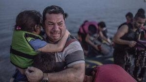

The collapse of the sexual revolution is giving rise to an abandonment pandemic among post twenty-something women. Nature abhors a vacuum, so the ecological force of the missing husband and empty crib manifests in political efforts to attach women to the state and import extra virile, hard, young men.
Civilisations are uncannily good at exercising the imperatives of their sexual economies without revealing what those imperatives truly are so, while no rational excuse has ever been forthcoming for the Islamic settlement of Europe, anyone who dares to raise an objection is typically met with ‘Think of the children!’
Long before the invasion of Europe, the Think of the children™ stamp was already being used as a defence for any selfish demand it suffixed.
I got pissed on Blue Nun, read Eat Pray Love, and decided to shack up with a fit Turkish taxi driver – YOLO! but I still have a right to fleece my ex-husband for a fortune in alimony because think of the children!
Or…
We need aid programmes to send ageing female charity workers into the Calais jungle to help young men with construction work and social integration, because think of the children!
Or even…
It’s a woman’s right to have an abortion! An unwanted child shouldn’t be brought to life think of the children!
The ethical posturing is demonstrably phoney – because it is selective.
You’re not really supposed to think of these children, because they’re the victims of racial minorities in Britain.
And as for the victims of the largest child massacre the world has ever seen (move aside Hitler!), they were mostly the victims of free love and women’s rights which, of course, are the highest ideals in our society.
Nothing, however, displayed the hypocrisy of this sentimental shibboleth quite so well as the narrative that surrounded the invasion of Europe.
You probably remember this picture – iconic of the crisis of 2015 – when a million bearded young men arrived on European shores.

Abdullah Kurdi decided to pay a people trafficker to take his family out of Turkey (where they had lived peacefully for three years), to the EU. The boat sank and only Abdullah survived. This photo of his drowned son, Alan, went round the world. Months after the tragedy, the German newspaper Bild caught up with Abdullah, by then safely back in Iraq. In Abdullah’s mind, it seemed quite clear who was to blame for what happened to his family: Western governments.
Now I’m probably safer than I’ve ever been in my life, but for what? People are still dying and nobody is doing anything about it.
Bild did a good job in documenting Kurdi’s sublimation of grief into resentment toward others. The only problem is that people reading his words in the West were bound to sympathise with his warped view because they feel sorry for his son. I feel sorry for him too, but that doesn’t mean I must to buy into his father’s geopolitical theories.
Kurdi broke European law and supported a criminal racket in order to take his family from safety into danger, then used the resulting tragedy to blame the very people who tried (not hard enough, in my opinion), to stop him. The only way anyone could possibly stare down these facts – let alone ignore them entirely – is through the emotional blackmail generated by those who have appropriated the image of his dead child for political purposes.
A barrage of such images were used to pour scorn on anyone who might otherwise voice their natural malaise at the violence, rape, panic and illegality of the ensuing Islamic invasion. Anyone who dared to point out that the images failed to represent the true demographic of people who were pouring across our borders was shamed in to silence as uncharitable, racist or – har har! – ‘un-Christian.’

The World Press Photo Award 2015 went to this photo of a child being passed, by moonlight, from (peaceful) Serbia to Hungary.
Realising that Europeans would appropriate the blame for any suffering inflicted upon their children, migrants and press were quick to supply the newfound demand.
This Iraqi family became poster-children of the influx when photographed arriving on the Greek Island of Kos – supposedly escaping from mortal danger.

A year later, a newspaper tried to track them down in Germany, only to discover that they had returned to Iraq. Only their son remains in the West. He has become a criminal. No matter, though. Emotional memory linked to the original photo should far outlast any inconvenient consideration of fact (and if it doesn’t, then that’s just because you’re autistic).
So the press continued its appeal to emotion and, very quickly, we had this…

He’s going to kill himself if the EU governments send him back to Turkey. Did he write that sign himself?
People have to understand that a hostage situation in which people take themselves hostage is still a hostage situation. It is normally the policy of Western governments not to negotiate with hostage-takers so as to discourage it as a means of manipulation. Their failure to apply this policy to migrants lead, inevitably, to this…
These migrants sank their own boat and drowned because they believed that they would be rescued by the boat they encountered. Unfortunately for them, the boat was Tunisian, not Italian.
By the end of this summer, thousands more will have died in similar circumstances. Think about how many lives might have been saved if we had just shot a few, or at least convincingly pretended to have shot a few, attempting to cross in the first place.
Sound too harsh? Well, let’s turn for guidance to the scriptures that lie at the foundation of our occidental Christendom.
The most efficient way to protect the greatest number of children is not to throw public money at them, but rather to stop tolerating delinquency in their adult supervisors.
For a society to do this actually requires less effort, not more. However, the difficulty lies in the realisation that the original effort to think of the children had nothing to do with thinking of the children and everything to do with thinking of the motivations of the people who told us to think of the children.
King Solomon bossing the ultimate shit-test
King Solomon (he of 300 wives and 700 concubines), understood better than anyone how to handle the types of emotive little outbursts we are now supposed to revere. One day, two women came before him to seek his justice. They lived alone for they were Harlots (Kings 3:16). Both had recently give birth (single moms). One had accidentally rolled over and squashed her baby in the night (fatty), and both pointed the finger of blame at the other.
Unable to settle the matter between themselves, they sought judgement from the state in the person of King Solomon (the Bible is charitable enough to omit that if they’d had a man around in the first place they probably wouldn’t have ended up in this pickle). King Solomon responded:
Bring me a sword, divide the living child in two, and give half to one, and half to the other.
Two words: agree and amplify.
At this, the women were suddenly forced to weigh their selfish interests against that of the child. The woman who was lying was happy to let the child be cut in half while the true mother revoked her claim to the child in order to allow her baby to live with the other woman. So (disobeying both of them), King Solomon gave the baby back to his mother.
And all Israel heard of the judgment which the king had rendered; and they feared the king, for they saw that the wisdom of God was in him to administer justice
In her seminar ‘The Israelite Woman: Social Role and Literary Type in Biblical Narrative,’ Professor Athalya Brenner-Idan – a biblical scholar at Tel Aviv University – notes that both women’s maternal instinct is intact. For the true mother it is manifested, as mentioned, in the compassion and devotion that she shows for her son. For the impostor it is manifested in her desire for a son, which makes her steal the other mother’s son when her own son dies. According to Brenner, one of the lessons of the story is that “true maternal feelings […] may exist even in the bosom of the lowliest woman.”
I agree with the professor and I draw her intriguing observation to its logical conclusion: women, by their nature, must be managed by stoic men – or else chaos ensues.
One way or another, the hundred-year female suffrage experiment is grinding to a halt. Polling data from across Europe is quite clear: pro-invasion leaders like Mutti Merkel and cuck-consort hag-fag Macron would not be in office without the votes of unmarried women. Their very purpose is to defer King Solomon’s judgement indefinitely at the expense of the accumulated financial and social capital of the West. When that is done, the matriarchy will collapse.
The only question is: will it be replaced by a Christian patriarchal resurgence or by Sharia law?
Read More: German Government Cuckolds Its Men By Teaching Migrants How To Sleep With German Women